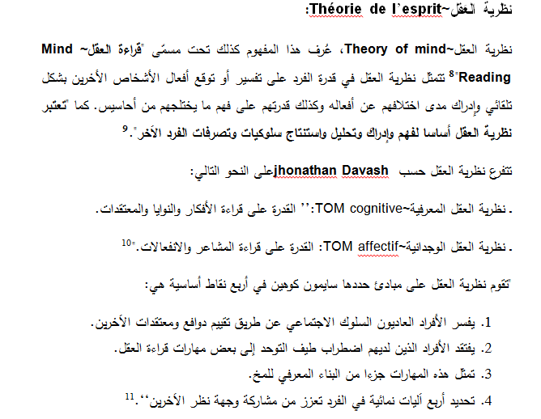

مقدمة في نظرية العقل
نظرية العقل هي قدرة الشخص على فهم أن الآخرين لديهم أفكار ومعتقدات ومشاعر مستقلة قد تكون مختلفة عن أفكاره. هذه القدرة مهمة لفهم التفاعلات الاجتماعية والتكيف معها.
الطفل الذي يعاني من طيف التوحد قد يواجه صعوبة في فهم هذه الفكرة، مما يؤثر على تفاعله مع الآخرين. ومن هنا جاءت الحاجة لاستخدام استراتيجيات تساعد الأطفال في تطوير هذه القدرة.
